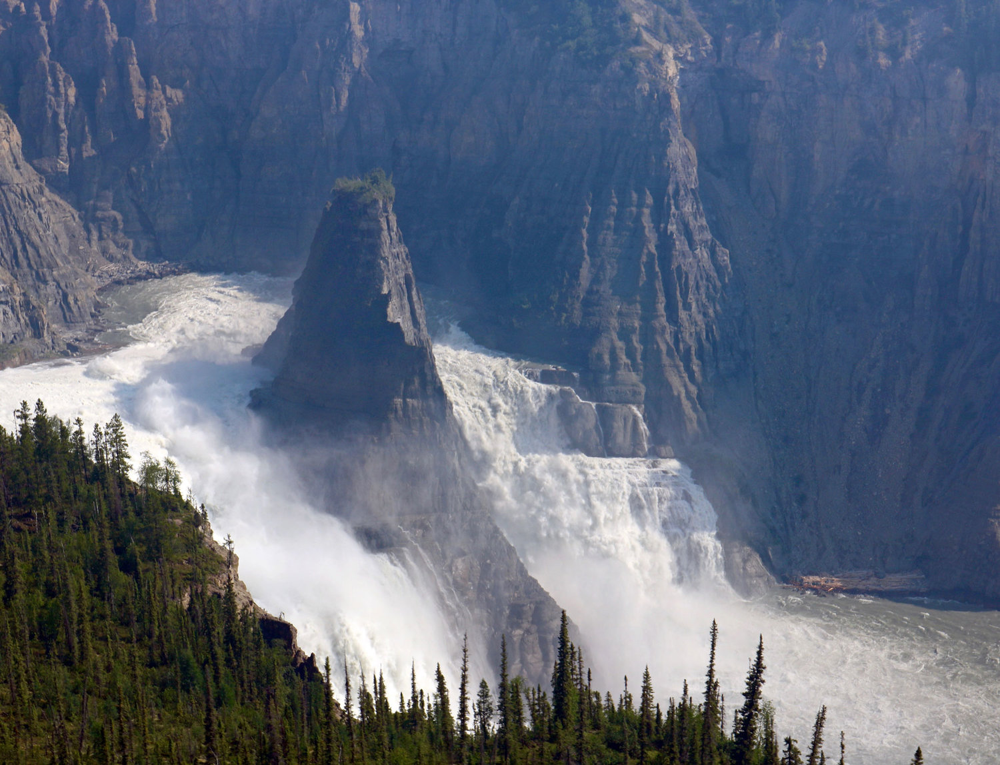
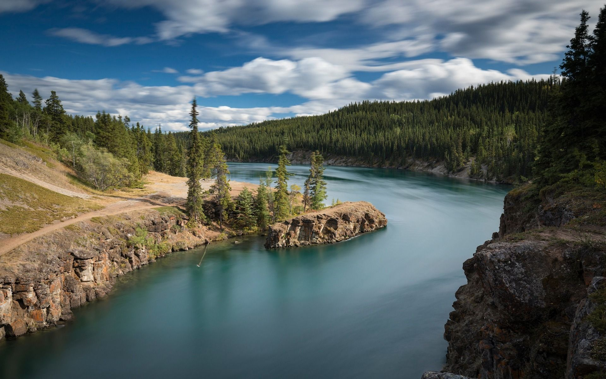
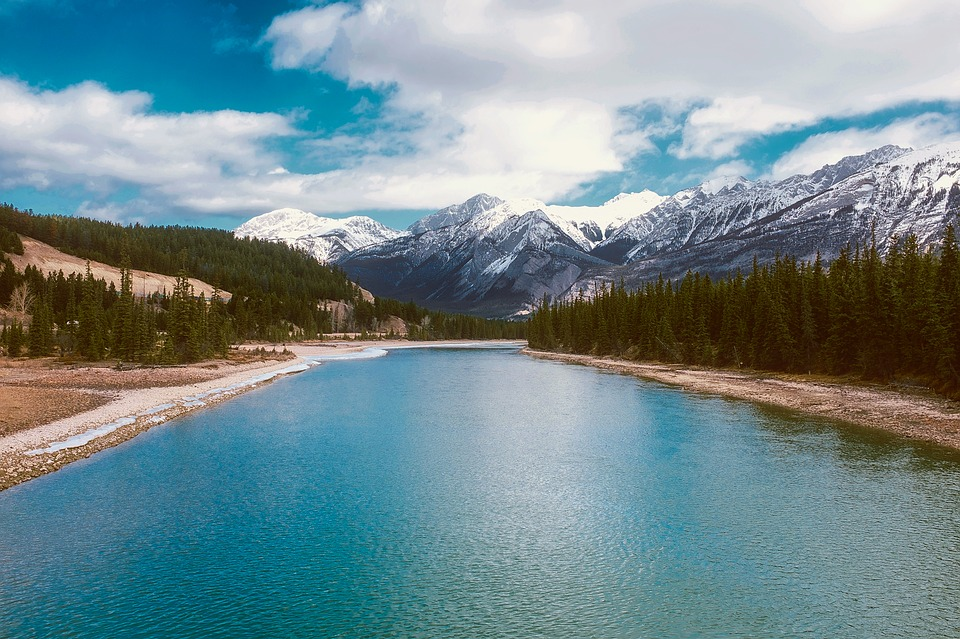
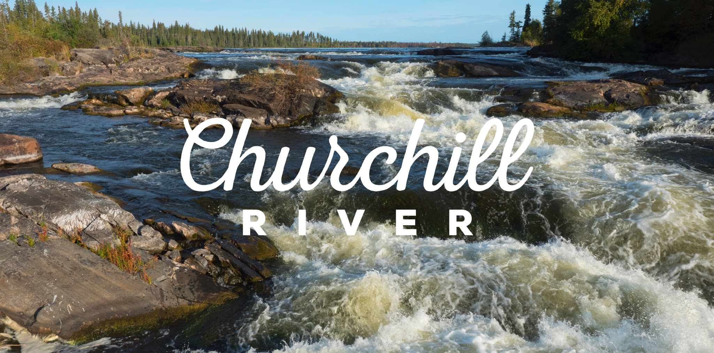
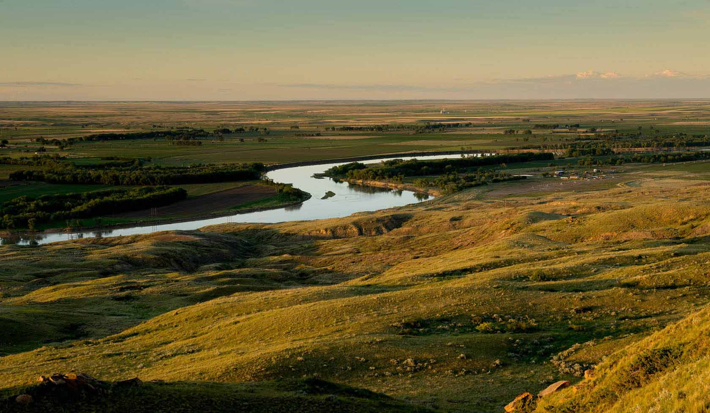
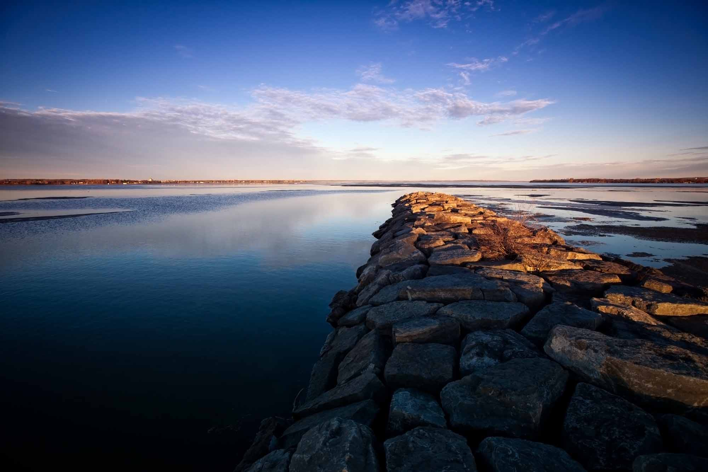
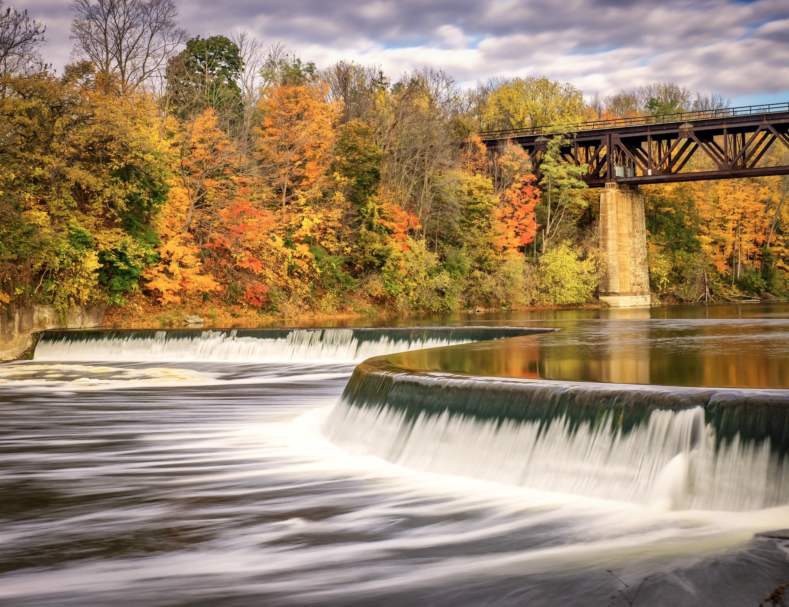
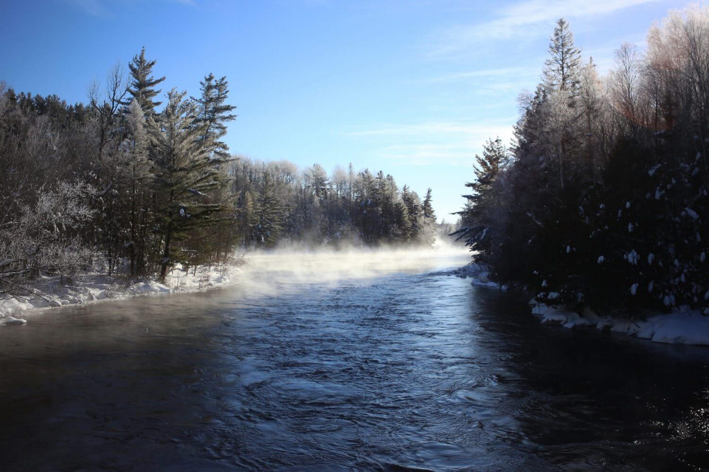
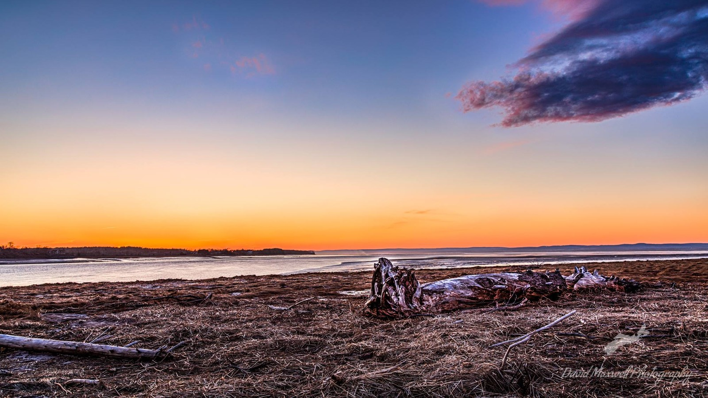

Tourism Rivers*

1. Thelon RiverThelon River is across northern Canada. The source of Thelon River is in Northwest Territories and flows east on Nunavut. The source of this river is Whitefish Lake and it drains to Baker Lake. The length of the Thelon River is 900 km. The basin area of Thelon River is 142,400 km2. The other mouth of this river is Hudson Bay. The Province of Thelon River is Nunavut. If you go to visit this river you can also have a sight of Thelon Wildlife Sanctuary. See more info |

2. Nahanni RiverTo be declared as the first UNESCO World Heritage Site was Nahanni River. Nahanni River is considered as the World Heritage Site of UNESCO because of some unique reasons that include hot springs, a waterfall which is twice the height of Niagara Falls and the deepest Canyons in Canada. The length of this river is 540 km and the discharge is 404 m3/s. The basin size of this river is 31,100 km2. The main source of this river is the Selwyn Mountains and the mouth of the Nahanni River is the Liard River. South Nahanni River is the major tributary of Liard River. TIt is the centerpiece of Nahanni National Park Reserve. See more info |

3. Yukon RiverThe fifth longest river Yukon River is 3,187 km. the basin area of Yukon River is 854,700 km2. The source of this river is Atlin Lake in the British Columbia, Yukon and the mouth of the river is the Bering Sea. Some part of the river lies in the U.S. State of Alaska. You must have a visit to this river in Canada. The longest wooden fish ladder is Whitehorse Fishway at the Whitehorse Dam on the Yukon River. See more info |

4. West Road RiverWest Road River is also known as Blackwater River because of its little dark tea colored. The length of the West Road River is 280 km. the source of West Road River is IIgachuz Range and the mouth of the river is Fraser River. The Basin area of West Road River is 12,000 km2. This river provides perfect opportunities for water activities like canoeing, paddling, and kayaking for those who seek thrill on waters. Though it is not easily accessible by road. See more info |

5. Churchill RiverChurchill River is one of the major rivers in Canada. The length of Churchill River is 1,609 km. the sources of Churchill River are Churchill Lake, Peter Pond Lake, Cold Lake, Beaver Lake, Sand River, Beaver River, and Winefred Lake. The mouth of the Churchill River is Hudson Bay; the basin area of the Churchill River is 281,300 sq. km. Churchill River is also known as Missinipi in Cree. See more info |

6. Milk RiverThis River is named by Lewis and Clark because of the color of the river that looks just like tea mixed with milk. Milk River is the only river that flows into the Gulf of Mexico basin. The elevation of this river is 1,059 m. on the cliffs, various ceremonies are stilled performed. There is a part of the river that gives it a dramatic look because of the hoodoos, sinkholes, natural bridges, and caves along the road. See more info |

7. Ottawa RiverThe border between Ontario and Quebec is the Ottawa River. Ottawa River is known for Whitewater Rafting excursions. The length of this river is 1,271 km. The basin river of Ottawa River is 146,300 km2. The mouth of this lake is the Saint Lawrence River. The source of Ottawa River is Lake Capimitchigama. The bridges over this river are Champlain Bridge, Alexandra Bridge, Chaudiere Bridge and more. The river was essential but rough for fur traders. See more info |

8. Grand RiverSituated in Southwestern Ontario, the length of this river is 280 km. The source of this river is Dundalk, Ontario at Port Maitland. The mouth of Grand River is Lake Erie. The main source of this river is near Dundalk, Ontario that is 525 m. There are many archaeological sites to watch there and many mills and factories. You can explore this river by boat. See more info |

9. Kipawa RiverThe length of the Kipawa River is 180 km. The mouth of the Kipawa River is the Ottawa River, Lake Timiskaming. This is the short river in Quebec, Canada. There are various fishing camps and cottages at the riverside. This river is not much developed but still, because of the beautiful landscapes, you must visit this river for once if you visit Canada. Kipawa River is very popular for rafting, kayaking, and canoeing etc. Concerned regarding the preservation of water is being raised because of the proposal of hydroelectric dams. See more info |

10. Shubenacadie RiverThe length of this river is 72 km and the basin size of this river is 1,304 km2. The source of this river is Shubenacadie Grand Lake. The river mouth of this river is Cobequid Bay. The mouths of this river are the Bay of Fundy, Cobequid Bay, and the Atlantic Ocean. The province of this river in Nova Scotia. As the tide flows into the Minas Basin, under the weight of 14 billion tones the Nova Scotia countryside literally bends. See more info |

11. Hillsborough Riverthe largest River on Prince Edward Island, Hillsborough River divides the island in two. From the Mi’Kmaq to the French, this river has helped many civilizations to flourish which is why it has a rich heritage value. It is also home to diver ecosystems because of the grasslands, freshwater and brine marshes around the river. The river does no fall into the sea directly rather makes way through the saltwater of Charlottetown Harbour. See more info |
*:Information got from third party
*:All pictures are collected from Google pictures